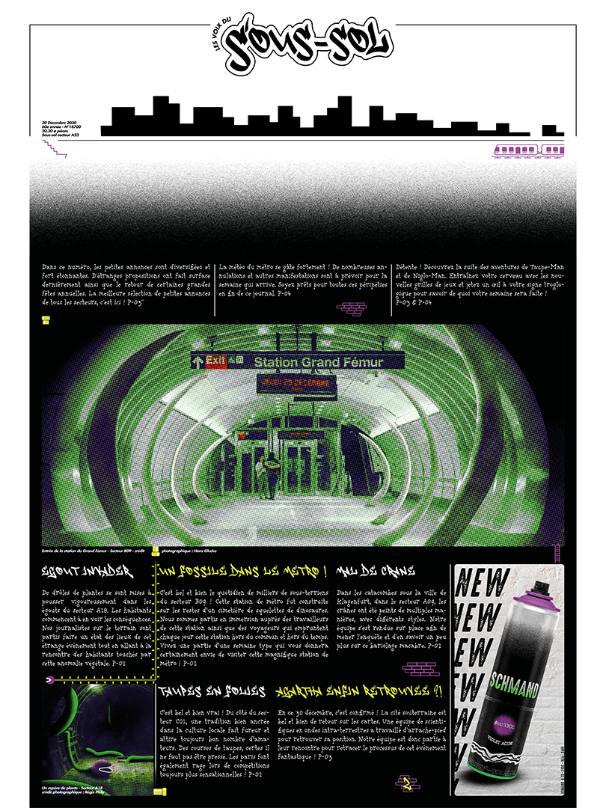
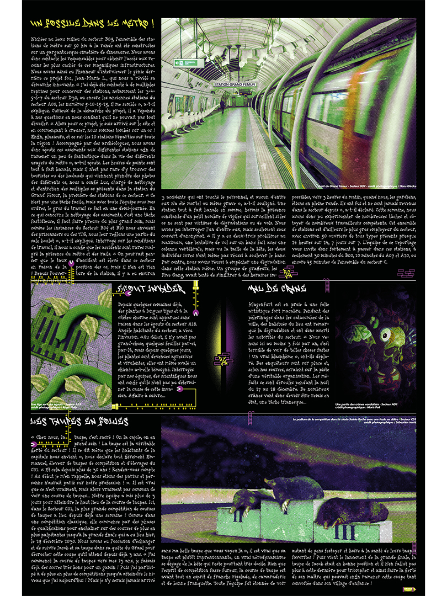

Les Voix du Sous-sol
Conçu dans le cadre d’un projet scolaire, ce détournement de journal vous propose les nouvelles fraîches des profondeurs de la terre. Le parti pris est d’ancrer l’objet et la mise en page dans un monde souterrain avec sa culture propre et ses particularités. Du constat qu’un journal pouvait être monotone, j’ai choisi de raconter des histoires à travers de la mise en page et un voyage dans les profondeurs tout au long du journal, appuyé par un ton “underground” et décalé, appuyé par une trichromie vert-violet-noir.

